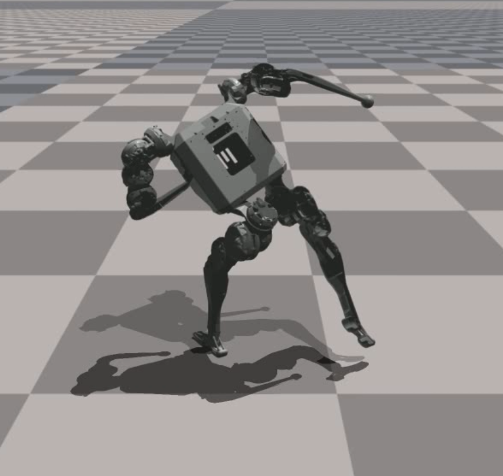

|
Wenshuai Zhao I'm an Electrical Engineering PhD student at Aalto Robot Learning Lab, Finland. I have always been fascinated by robots interacting with physical world, other robots and humans. Motivated by this theme, I started from exploring reinforcement learning algorithms. Recently I am interested in imitation learning for humanoid robots and learning dynamics model from human videos. |
{kind=link}
ResearchI have done several works on mutli-agent reinforcment learning, curriculum learning and model-based reinforcement learning. Representative papers are highlighted. |
Multi-agent Reinforcement Learning |
|
|
Optimistic Multi-Agent Policy Gradient
Wenshuai Zhao, Yi Zhao, Zhiyuan Li, Juho Kannala, Joni Pajarinen ICML, 2024 website / code / arXiv In order to overcome the relative overgeneralization problem in multi agent learning, we propose to enable optimism in multi-agent policy gradient methods by reshaping advantages. |
|
|
Backpropagation Through Agents
Zhiyuan Li, Wenshuai Zhao, Lijun Wu, Joni Pajarinen AAAI, 2024 code / arXiv We propose to backpropogate the gradients through action chains in auto-regressive based MARL methods. |
|
|
AgentMixer: Multi-Agent Correlated Policy Factorization
Zhiyuan Li, Wenshuai Zhao, Lijun Wu, Joni Pajarinen arxiv, 2024 code / arXiv We propose multi-agent correlated policy factorization under CTDE, in order to overcome the asymmetric learning failure when naively distill individual policies from a joint policy. |

|
Learning Progress Driven Multi-Agent Curriculum
Wenshuai Zhao, Zhiyuan Li, Joni Pajarinen arXiv, 2024 code / arXiv We show two flaws in existing reward based curriculum learning algorithms when generating number of agents as curriculum in MARL. Instead, we propose a learning progress metric as a new optimization objective which generates curriculum maximizing the learning progress of agents. |
Robot Learning |
|

|
Bi-Level Motion Imitation for Humanoid Robots
Wenshuai Zhao, Yi Zhao, Joni Pajarinen, Michael Muehlebach Michael Muehlebach CoRL, 2024 code / arXiv We propose a bi-level optimization framework to address the issue of physically infeasible motion data in humanoid imitation learning. The method alternates between optimizing the robot's policy and modifying the reference motions, while using a latent space regularization to preserve the original motion patterns. |

|
Less Is More: Robust Robot Learning via Partially
Observable Multi-Agent Reinforcement Learning
Wenshuai Zhao*, Eetu-Aleksi Rantala*, Joni Pajarinen, Jorge Pena Queralta arXiv, 2023 code / arXiv We show that in many multi agent systems where agents are weakly coupled, partial observation can still enable near-optimal decision making. Moreover, in a mobile robot manipulator, we show partial observation of agents can improve robustness to agent failure. |
Model-based Reinforcement Learning |

|
Simplified Temporal Consistency Reinforcement Learning
Yi Zhao, Wenshuai Zhao, Rinu Boney, Juho Kannala Joni Pajarinen ICML, 2023 code / arXiv We propose a simple but effective model-based reinforcement learning algorithm relying only on a latent dynamics model trained by latent temporal consistency. |
|
|
|
Design and source code from Jon Barron's website |